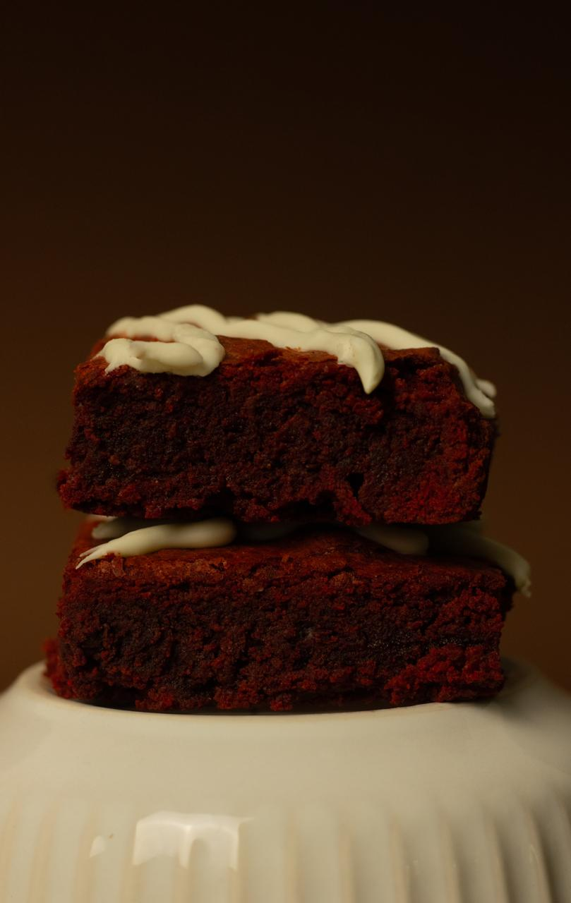
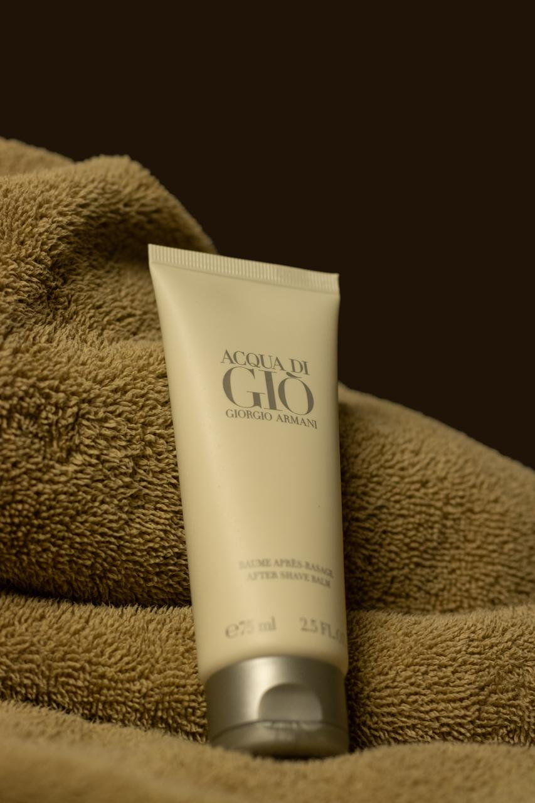
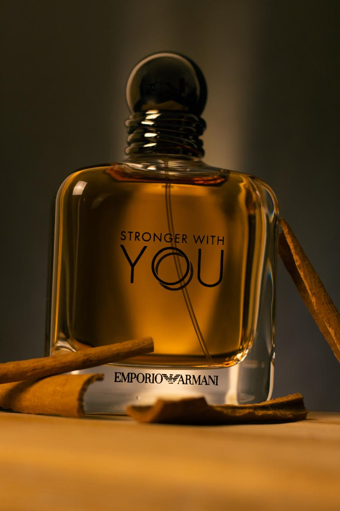
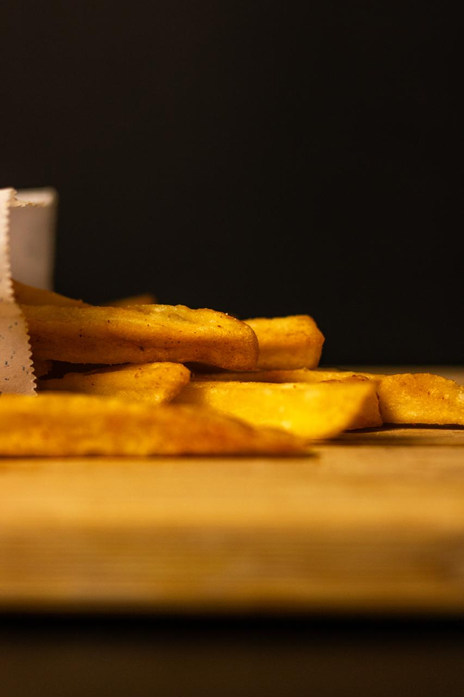

Perfil profesional
Soy un profesional del área multimedia con 4 años de experiencia como fotógrafo, especializado en fotografía de producto y gastronómica. Me enfoco en crear imágenes con iluminación controlada, composición cuidada y una atmósfera cálida que resalte la textura y el valor de cada producto. Domino la edición digital con Photoshop y Lightroom y complemento mi trabajo con edición de video en DaVinci Resolve.
Educación
Tecnólogo en Multimedia
Instituto Tecnológico de las Américas (ITLA)
2025 - Presente
Experiencia
Fotógrafo Multimedia
Trabajo independiente
2022 - Presente
- Fotografía de producto: perfumes, cosméticos y artículos de cuidado personal.
- Fotografía gastronómica: postres, comidas rápidas y platos con enfoque en textura y color.
- Montaje de escenas con iluminación artificial y fondos oscuros para lograr un estilo dramático.
- Retoque y revelado profesional de imágenes con Photoshop y Lightroom.
- Edición de video para contenido visual y promocional con DaVinci Resolve.
Habilidades
- Adobe Photoshop: nivel avanzado
- Adobe Lightroom: nivel avanzado
- DaVinci Resolve: nivel medio
- Fotografía de producto y gastronómica
- Iluminación y composición
- Corrección de color
Idiomas
- Español: nativo
- Inglés: nivel intermedio
Proyectos y portafolio
-
Campaña con Cake Factory
Fotografía gastronómica

-
Campaña con Giorno Armani
Campaña can Giorno Armani

-
Campaña de perfume Stronger With You
Fotografía de producto

-
Papas fritas
Fotografía gastronómica
